Week 6: Electronics Design
Adding Components
For this assignment we had to add one LED, one button and one voltage regulator, and multiple VCCs and GNDs to an existing board. I used the Hello Board for my basis.
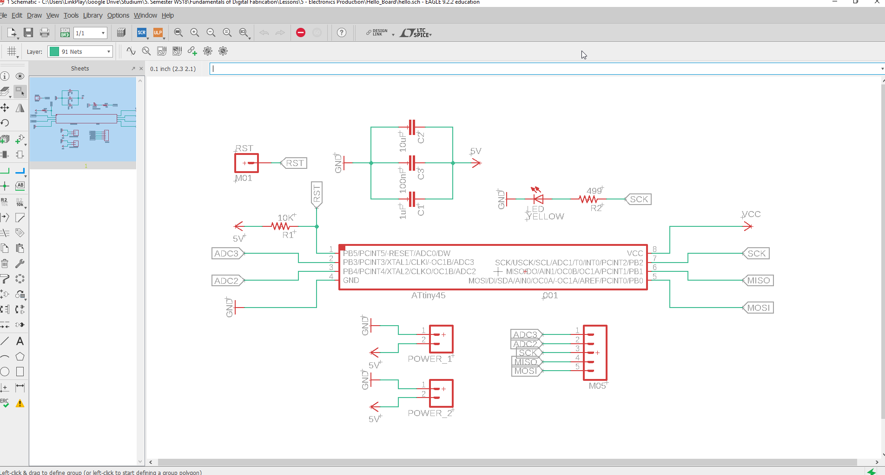
I opened the Hello Board in EAGLE and started by adding the components.
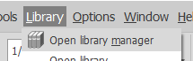
To add components you first need to import the right libraries. Do that by going to Library > Open library manager.
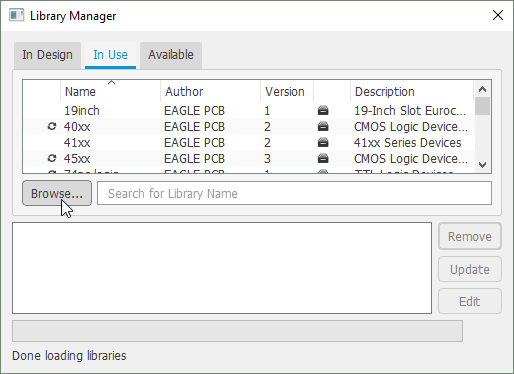
Open the "In Use" tab and click "Browse". Select the folder with the provided files and click open.
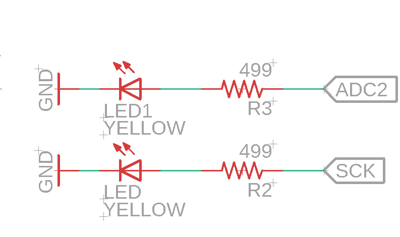
Adding the LED was really simple. Just had to copy the existing LED and connect it to Microchip. I chose the ADC2 pin.
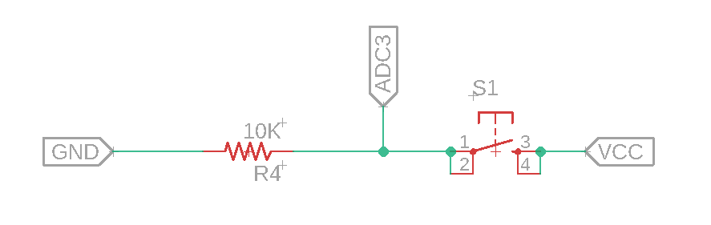
I added a Button (6mm Omron Switch) which is connected to VCC, ADC3 and Ground through a resistor.
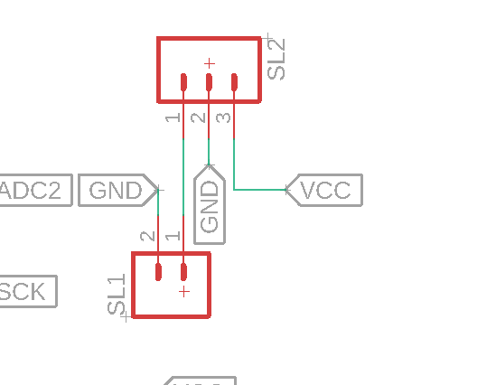
The Voltage regulator is represented by a 3 pin connector (M03) and has one In, one Ground and one Out connector.
In is provided by a 2 pin connector (M02) which will be connected to a battery. Also this needs to be connected to Ground.
The Ground pin obviously needs to be connected to ground. At last the Out pin is connected to VCC.
Next, we need to change all the 5V to VCC labels so it makes sense.
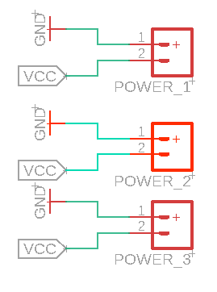
And for the last step, we copy one ACC/Ground for the assignment.
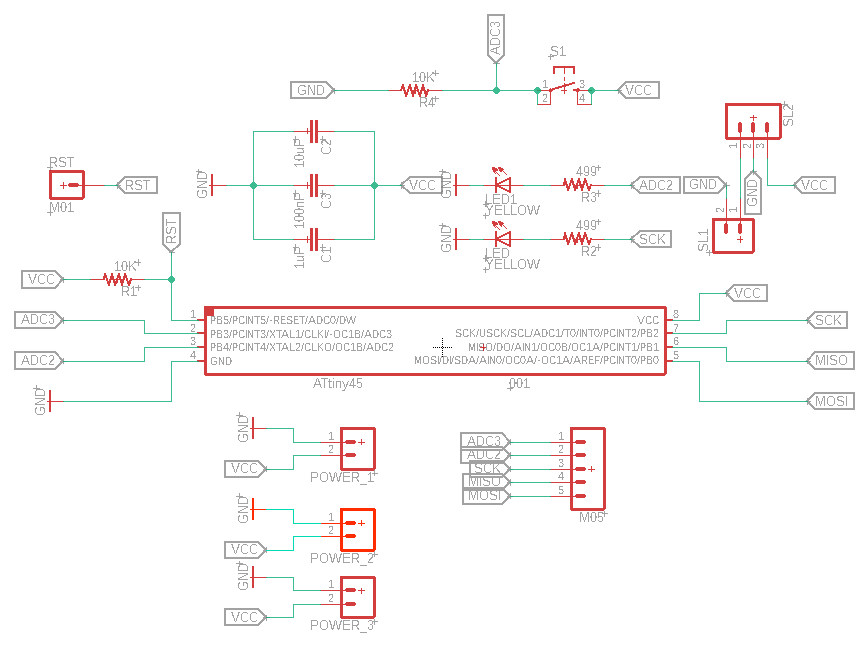
Board Layout
To switch to the board view you can press this button.
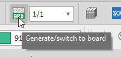
After opening the board view you have to arrange the parts in a logical way for and route the connections.
This can get very tricky and use a couple of tries. A few tips that help is to work on the pieces one by one and put the parts far apart. You can always make the board more compact later on. Also don't forget to use the ratsnest tool to optimize the paths.
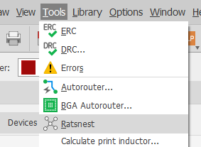
After playing around for a good while I finaly had a board that I was happy with.
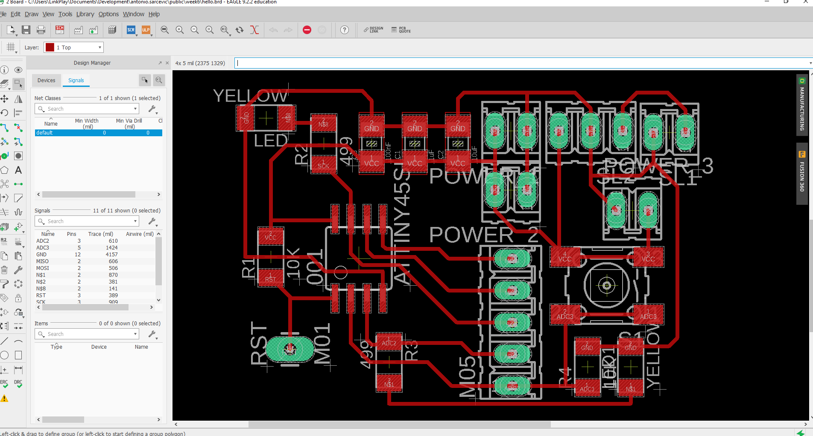
Now to preparing the files like in the last week.
So Export from Eagle, Crop and Edit in Photoshop and get rml file from fabmodules.org.
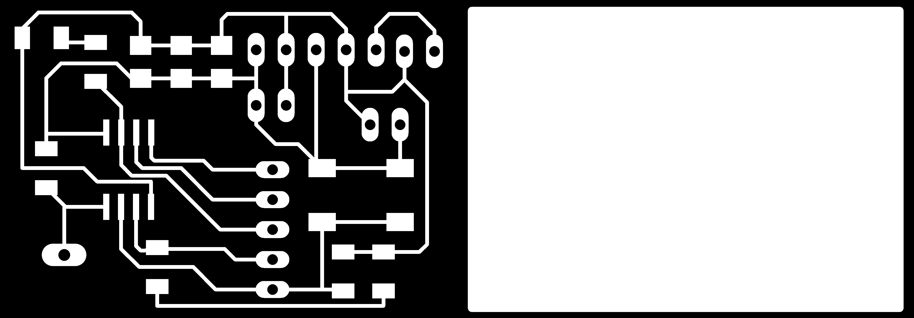
These are the PNG files I made in Photoshop.
Then I uploaded these to fabmodules.org to get the files for the mill.
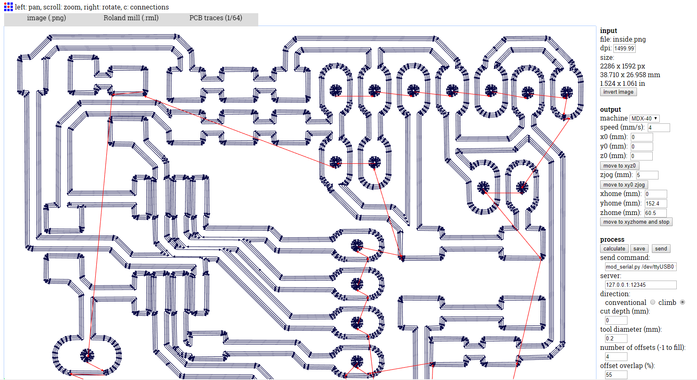
After showing Mr. Ingrassia the board he said, that a ground layer would save time in the milling.
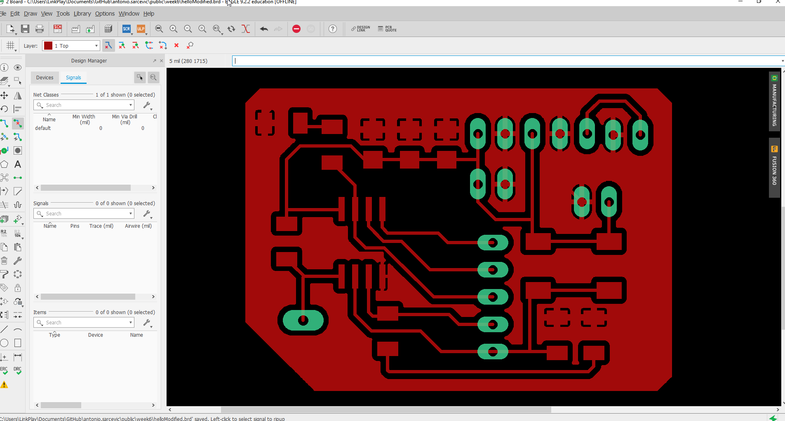
I added a ground layer and exported the files again.
Milling and Soldering
Milling and Soldering is also just like last week.

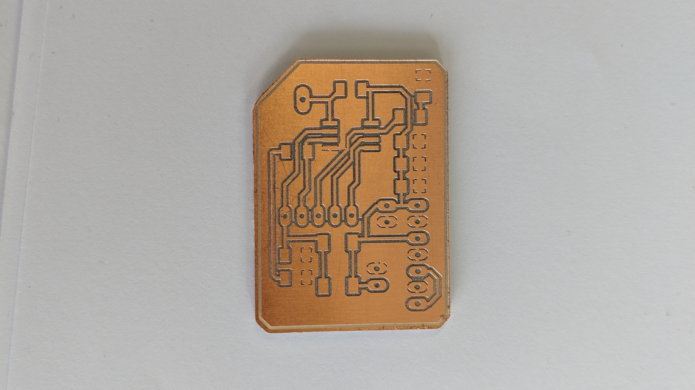
The board looked like this.

Drilling the holes for the pins.
Then on to soldering on the microcontroller and the other parts using the EAGLE Board Image as reference.

And this is how it looked like after finishing the other parts.

False Ground Connection
After double checking the connections I noticed a wrong connection. The GND was connected to middle pin of the middle pin array on the board.
We took of the microcontroller using a heat gun and saw this.

This little connection created a jump for the ground to the 3rd pin.
Mr. Ingrassia helped me and used a knife to cut the connection. Sadly he cut the connection too far and we had to bridge it using a bit of solder.

It's far from the prettiest thing but it works, somehow.
Wrong Signature Error
After connecting the Arduino and flashing the ISP software, I connected my board to the Arduino.

After selecting the ATTiny45 and the right settings I tried burning the bootloader.
But I got this error:
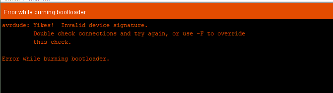
After testing every single connection twice and testing with a different board Mr. Ingrassia came to the conclusion, that the microcontroller has to be broken.
I had to solder on a new microcontroller.
Programming
After soldering on a new microcontroller the bootloader finally burned correctly.
I used the example blink code but changed a few lines, so both LEDs would light up.
Blink
// the setup function runs once when you press reset or power the board
void setup() {
// initialize digital pin PB2 and PB4 as an output.
pinMode(PB2, OUTPUT);
pinMode(PB4, OUTPUT);
}
// the loop function runs over and over again forever
void loop() {
digitalWrite(PB2, HIGH); // turn the LED on (HIGH is the voltage level)
digitalWrite(PB4, HIGH); // turn the LED on (HIGH is the voltage level)
delay(1000); // wait for a second
digitalWrite(PB2, LOW); // turn the LED off by making the voltage LOW
digitalWrite(PB4, LOW); // turn the LED off by making the voltage LOW
delay(1000); // wait for a second
}
And it works!